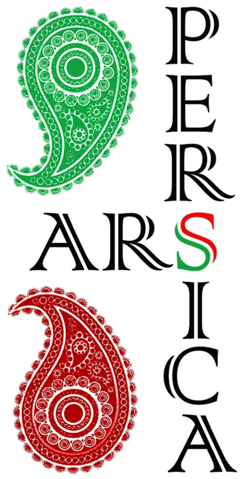

Brand identity · v1 · November 2026
Ars Persica
Persian art, at home in Europe. A curator’s voice for hand-made Persian rugs, kilims and handicrafts, kept in Budapest and offered across Europe.
Logo

- The original vertical logo (two boteh + stacked letters) is kept unchanged for print, signage and the footer.
- For web headers and small sizes use the horizontal lockup: both boteh (green and red) + “ARS PERSICA” in Cinzel, PERSICA in copper.
- On walnut grounds the letters become cream. Never recolour the two boteh: green and madder are the identity.
- Clear space: the height of one boteh’s eye on every side. Minimum horizontal lockup width: 140 px.
Colour · “Kerman cream & walnut”
Shir cream #F4ECDF
main ground
main ground
Parchment #ECE1CF
alternate bands
alternate bands
Kerman walnut #3A2519
text, dark bands
text, dark bands
Copper #A8592E
accent, links
accent, links
Firouzeh #1F7A78
small details
small details
Madder #9E2B25
red boteh
red boteh
Boteh green #2D7A4F
green boteh, WhatsApp
green boteh, WhatsApp
No black anywhere. The site lives on plaster cream with walnut-brown ink, like a courtyard house in Isfahan; copper is the one accent for actions. Walnut on cream passes WCAG AAA contrast; copper on cream passes AA for text and buttons.
Typography
| Role | Latin (EN · HU · DE) | Arabic |
|---|---|---|
| Headlines | Cormorant Garamond 500 / italic | Amiri 700 — فن فارسي |
| Labels, nav, wordmark | CINZEL 600 · ŐŰ ÄÖÜ | Noto Sans Arabic 600 |
| Body | Inter 400/500 — legible at every size | Noto Sans Arabic 400 |
All faces are self-hosted (Open Font License), subset for Latin, Latin Extended (Hungarian ő/ű) and Arabic. No Google Fonts requests: GDPR-clean.
Motifs
- The guard border: a hairline frame with chamfered corners, like a rug’s outer guard stripe, with one copper knot (lozenge) at the top.
- The kilim band: copper and madder lozenges used as a section divider.
- The lozenge bullet: a 45° square replaces dots in kickers, the chapter rail and markers.
- Photography: warm still lifes on cream plaster and walnut, side light from a lattice window, one craft per frame. Low-resolution photos are never used large. Gallery images are studio illustrations until the shop’s product photography replaces them.
Voice
- A knowledgeable curator, not a bazaar: warm, precise, unhurried.
- Facts over superlatives: technique, materials, origin. No invented ages, knot counts or “investment value” claims.
- Hungarian copy is written for Hungarian readers (perzsaszőnyeg, kilim), not translated word for word; the same goes for German and Arabic.
- Every page invites a next step: see it in Budapest, ask for a video call, or enquire.
Team notes
| Role | Decision |
|---|---|
| Marketing strategist | Position Ars Persica as the European home of Persian craft, with Budapest stock as the trust anchor (“see it before you buy”). |
| Graphic designer | Keep the boteh logo; new palette “Kerman cream & walnut” (no black); copper as the single action colour; guard-border frame; Cormorant + Cinzel; one craft still life per hero chapter. |
| Website specialist (UX) | Header always visible with language switch; chapter tabs in the hero dock; gallery filters and a keyboard-accessible story dialog (Esc, arrows); floating WhatsApp after the hero; 44 px touch targets; Arabic mirrored with its own type. Static, pre-rendered pages per language (/en /hu /de /ar), no framework. Product cards already carry data-category and a hidden price slot, ready for the shop. |
| SEO / market analyst | hreflang + x-default, localised titles and descriptions, JSON-LD (Organization, WebSite, WebPage, ItemList, FAQPage), sitemap with alternates, rug-guide content per language; gallery craft texts pre-rendered in HTML (indexable), each with its own #craft-… anchor and VisualArtwork schema. |
| Sales (retail) | Enquiry is the only conversion until the shop opens: every card, the header pill and contact open a pre-filled WhatsApp chat (email as backup). |
| Hungarian business lawyer | Before the shop opens: ÁSZF (terms), 14-day right of withdrawal, cookie consent if analytics are added, updated Impresszum and privacy policy. |